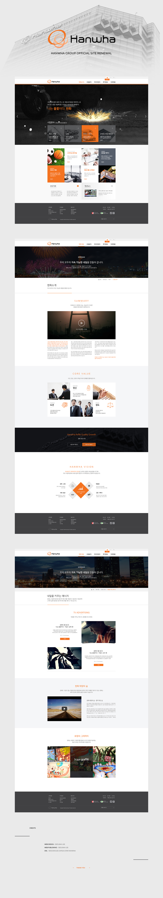

- Hanwha Group Official Site Renewal
- 기존의 다소 Old한 느낌을 가지고 있던 대표 홈페이지를 요즘의 트렌드인 Flat한 컨셉을 살려 좀 더 젊은 느낌으로 구성하였다. main visual을 기존보다 더 눈에 띄고 감성적으로 다가올 수 있는 이미지로 바꾸었고, 기존의 메인 컨텐츠들은 유지하되 좀 더 가독성을 높이는 방향으로 깔끔하게 재정리하였다. 서브 페이지는 여백을 시원시원하게 주어 답답하고 좁은 느낌을 없앴고, 공간을 넓게 활용해 한눈에 내용이 들어오도록 제작하였다.
-
Concept:Flat, Simple, Clear
Date:2015.07-2015.08
Color:blackwhitelightgray
Skills:Ps + HTML5 + CSS3 + jQuery
-
My role:Plan, Concept, Design, Coding
go to site - 